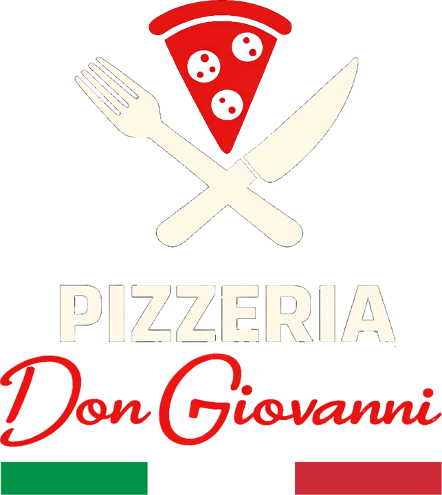

Choisissez votre langue · Kies uw taal · Wählen Sie Ihre Sprache
Scegli la lingua · Choose your language · Elige tu idioma
Vous pourrez changer de langue à tout moment avec les boutons FR · NL · DE · IT · EN · ES en haut du menu.
U kunt altijd van taal wisselen met de knoppen bovenaan het menu.
Sie können die Sprache jederzeit mit den Tasten oben im Menü ändern.
Puoi cambiare lingua in qualsiasi momento con i pulsanti in alto nel menu.
You can change the language at any time with the buttons at the top of the menu.
Puedes cambiar de idioma en cualquier momento con los botones de arriba del menú.